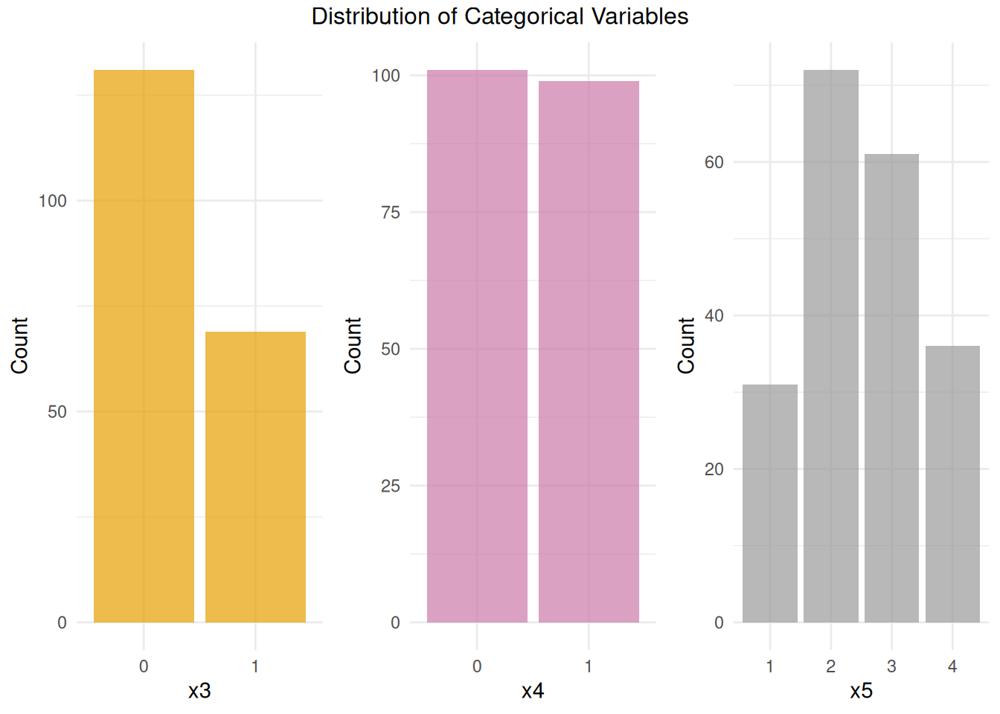
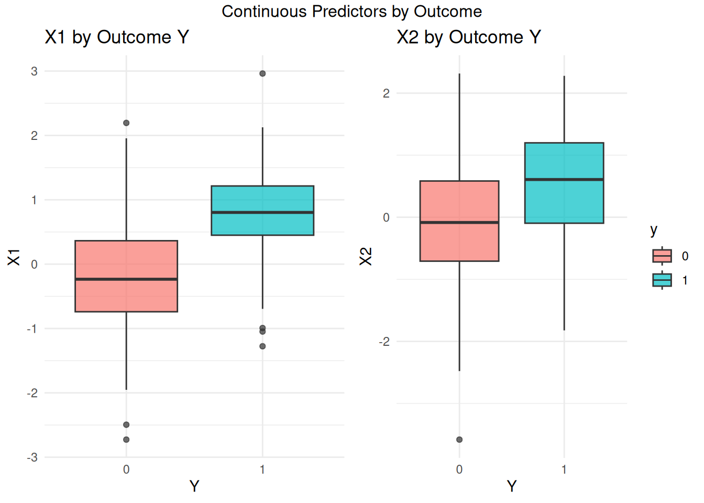

| x1 | x2 | x3 | x4 | x5 | y |
|---|---|---|---|---|---|
| -0.2920649 | -0.0389402 | 0 | 0 | 3 | 0 |
| 0.2585203 | -1.1038319 | 0 | 0 | 3 | 0 |
| -0.3255838 | 0.0211378 | 1 | 1 | 3 | 0 |
| 0.7591404 | 1.2045629 | 1 | 0 | 1 | 0 |
| -0.7619825 | 0.9918415 | 1 | 1 | 3 | 0 |
| 0.3543335 | 0.7423291 | 0 | 0 | 3 | 0 |
Data Preparation and Exploration
Computer Practical Solutions
Introduction
In this practical, we will explore a dataset derived from an observational study focusing on short-term outcomes in a clinical context (e.g., 30-day mortality). The aim is to guide you through the key steps in data preparation, exploration, and predictive model development using R.
We begin by loading and inspecting the dataset, understanding its structure, and identifying the types of variables available for analysis.
About the Dataset
To begin, we load the dataset and display the first few rows to get an overview of its structure and contents:
The dataset includes:
- Five predictors:
x1andx2: continuous variables
x3andx4: binary variables
x5: categorical variable (with more than two levels)
- Outcome:
y: a binary variable indicating the presence (1) or absence (0) of a health outcome
The outcome in this dataset is defined as a binary variable indicating whether a patient experienced the event (e.g., death) or not within a fixed short-term period (e.g., 30 days). To analyze this outcome using binary classification methods (e.g., logistic regression), the following assumptions should generally hold:
- Equal follow-up time: All patients must have been followed for the same fixed duration (e.g., 30 days). Otherwise, some patients may appear event-free simply because they were observed for a shorter period.
- Complete outcome data: The outcome must be known for all patients – that is, there should be no loss to follow-up.
- Well-defined time window: The event must have occurred within the specified time frame (e.g., “30-day mortality”), and not at an arbitrary point in time.
If these assumptions don’t hold, a time-to-event (survival) analysis would be more appropriate, as it can account for varying follow-up times and censoring.
This dataset will be used throughout the practical to illustrate key steps in data preparation, exploration, and prediction model development.
Descriptive Statistics and Visualizations
Before building any predictive models, it is important to first explore and understand the dataset. This section provides a step-by-step guide to generating descriptive statistics and visualizations that will help you examine the structure, distribution, and relationships among the variables.
We begin by examining the structure and summary statistics of the dataset. This will help us understand the types of variables present and their basic characteristics.
| Variable | Overall |
|---|---|
| n | 200 |
| x1 (mean (SD)) | 0.07 (0.94) |
| x2 (mean (SD)) | 0.06 (1.02) |
| x3 = 1 (%) | 69 (34.5) |
| x4 = 1 (%) | 99 (49.5) |
| x5 (%) | |
| 1 | 31 (15.5) |
| 2 | 72 (36.0) |
| 3 | 61 (30.5) |
| 4 | 36 (18.0) |
Distribution of Continuous Variables
To explore the distribution of the numeric predictors, we first visualize their shapes, spread, and central tendency using histograms. To assess whether the continuous variables are approximately normally distributed, we use Q-Q plots (quantile-quantile plots). In these plots, deviations from the diagonal line indicate departures from normality.
The exploratory analysis suggests that both variables are approximately normally distributed, supported by the following observations:
- The histograms show approximately symmetric, bell-shaped distributions centered around zero.
- The Q-Q plots confirm close alignment with the theoretical normal distribution.
- The means and medians are similar for both
x1andx2, further supporting the absence of skew or extreme values.
These characteristics indicate that both x1 and x2 are reasonably well-behaved and do not require transformation at this stage. While normality of predictors is not a strict requirement for regression models, having approximately symmetric and outlier-free variables supports model stability and interpretability.
We will now proceed to explore the remaining variables and begin constructing a predictive model.
Distribution of Categorical Variables
Explore the frequency distribution of categorical variables (x3,x4, and x5) using bar plots.

Summary of Categorical Predictors
x3(Binary)
Most participants have a value of0, with fewer having1. Both categories are well represented, so no specific adjustments are needed for modeling.x4(Binary)
Values0and1occur with approximately equal frequency, offering good representation across categories for modeling and interpretation.x5(Ordinal or Categorical with 4 Levels)
Levels2and3are most frequent, while1and4are less common. All levels are represented in the dataset, but ifx5is modeled using indicator (dummy) variables, estimates for the less common levels may be less precise due to smaller sample sizes.
Correlation
Analyze pairwise correlations to understand the linear relationships between variables. Use correlation coefficients (Pearson, Spearman, or Cramér’s V for categorical) and visualize them.
cor_result = rcompanion::correlation(df)
cor_result Var1 Var2 Type N Measure Statistic Lower.CL Upper.CL
1 x1 x2 Numeric x Numeric 200 Pearson 0.486 0.372 0.585
2 x1 x3 Numeric x Binary 200 Pearson 0.168 0.030 0.300
3 x1 x4 Numeric x Binary 200 Pearson -0.002 -0.141 0.137
4 x1 x5 Numeric x Nominal 200 Eta 0.046 0.000 0.122
5 x1 y Numeric x Binary 200 Pearson 0.482 0.368 0.582
6 x2 x3 Numeric x Binary 200 Pearson 0.419 0.298 0.527
7 x2 x4 Numeric x Binary 200 Pearson 0.095 -0.044 0.231
8 x2 x5 Numeric x Nominal 200 Eta 0.081 0.000 0.170
9 x2 y Numeric x Binary 200 Pearson 0.274 0.140 0.397
10 x3 x4 Binary x Binary 200 Phi 0.228 NA NA
11 x3 x5 Binary x Nominal 200 Cramer 0.168 NA NA
12 x3 y Binary x Binary 200 Phi 0.121 NA NA
13 x4 x5 Binary x Nominal 200 Cramer 0.333 NA NA
14 x4 y Binary x Binary 200 Phi -0.062 NA NA
15 x5 y Nominal x Binary 200 Cramer 0.096 NA NA
Test p.value Signif
1 cor.test 0.0000 ****
2 cor.test 0.0171 *
3 cor.test 0.9789 n.s.
4 Anova 0.9353 n.s.
5 cor.test 0.0000 ****
6 cor.test 0.0000 ****
7 cor.test 0.1798 n.s.
8 Anova 0.7291 n.s.
9 cor.test 0.0001 ****
10 chisq.test 0.0013 **
11 chisq.test 0.1297 n.s.
12 chisq.test 0.0862 n.s.
13 chisq.test 0.0001 ****
14 chisq.test 0.3770 n.s.
15 chisq.test 0.6037 n.s.The correlation Plot :
plot(cor_result)Based on the summary and the plot above, there are some insights that will be useful for modelling :
üî∏ Significance Legend:
****= p < 0.0001 → highly significant**= p < 0.01 → very significant*= p < 0.05 → significantn.s.= not significant
There are some variables that has significant correlations between each other :
| Pair | Correlation | Strength | Significance | Notes |
|---|---|---|---|---|
x1 ~ x2 |
0.486 | Moderate | **** | Moderate positive linear relationship |
x1 ~ y |
0.482 | Moderate | **** | x1 is moderately predictive of the outcome |
x2 ~ y |
0.274 | Weak-to-moderate | **** | Some predictive power, less than x1 |
x1 ~ x3 |
0.168 | Weak | * | Weak positive correlation |
x2 ~ x3 |
0.419 | Moderate | **** | x2 and x3 have moderate relationship |
x4 ~ x5 |
0.333 | Moderate | **** | Strongest categorical relationship in data |
x3 ~ x4 |
0.228 | Weak-to-moderate | ** | Some association between x3 and x4 |
Univariate relationship between Predictors and Response Variables
Explore how the predictor variables relate to the response variable. This can reveal early signs of predictive power and potential modeling strategies.
Numerical Predictors vs Response Variables
Use boxplots to assess the relationship between continuous predictors and the response variable.
p10 <- ggplot(df, aes(x = y, y = x1, fill = y)) +
geom_boxplot(alpha = 0.7) +
labs(title = "X1 by Outcome Y", x = "Y", y = "X1") + theme_minimal() +
theme(legend.position = "none")
p11 <- ggplot(df, aes(x = y, y = x2, fill = y)) +
geom_boxplot(alpha = 0.7) +
labs(title = "X2 by Outcome Y", x = "Y", y = "X2") + theme_minimal()
grid.arrange(p10, p11, ncol = 2, top = "Continuous Predictors by Outcome")
Here are some key takeaways from the plot :
For X1 and Y :
- Median of
x1is higher fory = 1compared toy = 0. - Individuals with higher
x1values are more likely to havey = 1(Indicate that there is moderate relationship between x1 and y, confirmed by the correlation value (0.482) with very high significance).
For X2 and Y :
- Median of
x2fory = 1is also higher than fory = 0 - The trend is upward, indicating that
x2may be somewhat predictive ofy, confirmed by the positive correlation value (0.274) with high significance
Categorical Predictors vs Response Variables
Use grouped bar plots to explore how categorical predictors influence the response.
p12 <- ggplot(df, aes_string(x = "x3", fill = "factor(y)")) +
geom_bar(position = "fill") + # stacked proportion bars
ylab("Proportion") +
labs(fill = "y", title = paste("X3 by Outcome Y")) + theme_minimal()Warning: `aes_string()` was deprecated in ggplot2 3.0.0.
ℹ Please use tidy evaluation idioms with `aes()`.
ℹ See also `vignette("ggplot2-in-packages")` for more information.p13 <- ggplot(df, aes_string(x = "x4", fill = "factor(y)")) +
geom_bar(position = "fill") + # stacked proportion bars
ylab("Proportion") +
labs(fill = "y", title = paste("X4 by Outcome Y")) + theme_minimal()
p14 <- ggplot(df, aes_string(x = "x5", fill = "factor(y)")) +
geom_bar(position = "fill") + # stacked proportion bars
ylab("Proportion") +
labs(fill = "y", title = paste("X5 by Outcome Y")) + theme_minimal()
grid.arrange(p12, p13, p14, ncol = 3, top = "Categorical Predictors by Outcome")
From the bar plots titled “Categorical Predictors by Outcome”, we can analyze how the response variable y (0 or 1) is distributed across levels of the categorical predictors: x3, x4, and x5.
- in every variables, majority of cases have
y = 0(orange) with smaller proportion ofy = 1(blue) - All the categorical variables have low correlations with the y. Thus, there is no categorical variables that has significant relationship with Y, indicated by high p-values and low correlation. That’s why no clear or strong association captured by the graph.
Conclusion
From the exploratory analysis, we found that the numeric predictors x1 and x2 show meaningful relationships with the outcome y, with x1 being the strongest predictor, as supported by both correlation coefficients and clear separation in boxplots. In contrast, the categorical variables x3, x4, and x5 show weak or no significant associations with the outcome, with only x3 displaying a mild visual trend that is not statistically significant. Additionally, all variables are complete with no missing values, and the data appears standardized. Overall, x1 and x2 are likely the most valuable predictors for modeling y, while the categorical variables may contribute little to model performance.